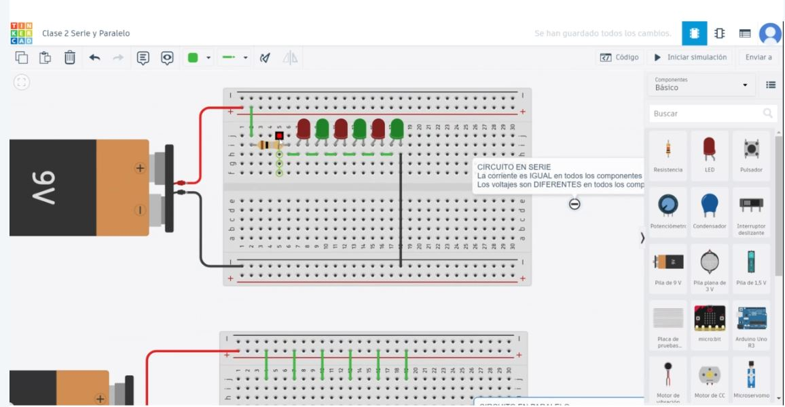

Sesión 8:
Se repasaron los componentes e hicimos un ejercicio práctico con un arduino, protoboard y LEDs, el cuál se conectó y prendió cuando fue conectado a una computadora. Asimismo, vimos la fórmula VIR (velocidad, corriente y resistencia) y que se miden en voltios, amperes y ohms respectivamente. Finalmente, vimos cómo funciona la línea de comandos CMD de Windows, y cómo se pueden identificar las direcciones IP a través de este.
Sesión 9:
Vimos componentes y términos sobre electrónica básica. Repasamos en Tinkercad cómo hacer simulaciones de circuitos: en un lado con la carga positiva y en el otro con la carga negativa, y cómo se conectan; cuando la corriente se subdivide a través de varios cables, por lo cuáles se transfiere la energía para llegar a los LEDs. Observamos los diferentes voltajes, los cuáles se midieron desde el anodo del LED hasta la parte de la resistencia.
